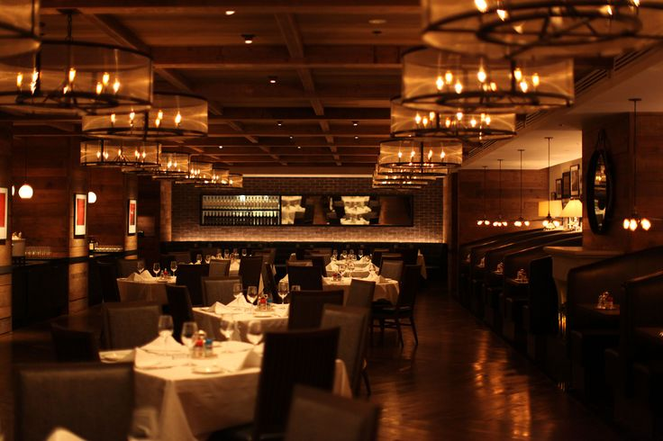

Welcome to Cafe Delight
Experience the perfect blend of coffee and comfort.
About Us
Welcome to Cafe Delight, where we blend the finest coffee with a warm, inviting atmosphere. Our cafe is a cozy retreat for coffee lovers and food enthusiasts alike. We source our beans from sustainable farms and craft each cup with care.
Our Story: Founded in 2020, Cafe Delight quickly became a beloved spot in the community. We believe in creating memorable experiences, whether you're here for your morning coffee or a relaxing afternoon treat.
Our Mission: To provide a welcoming space for everyone, serving high-quality coffee and delicious food with a smile. We are committed to sustainability and ethical sourcing, supporting both the environment and our farmers.
Meet Our Chef: Our talented chef brings creativity and passion to every dish, ensuring that each bite is as delightful as every sip of our coffee. From classic pastries to innovative specials, our menu is crafted with love and expertise.
Contact Us
Visit us at 123 Coffee Street, or call us at (123) 456-7890. We're open Monday to Friday, 7 AM to 8 PM, and weekends from 8 AM to 6 PM.